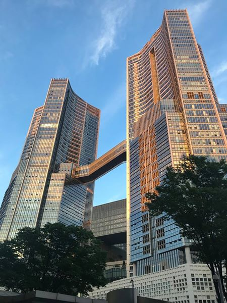

Jižní Korea - Soul a okolí
Južná Kórea není příliš navštěvovaná země, pro mnoho lidí je to jen nucená zastávka na cestě do Japonska a málokdo zde míří jako do cílové destinace. Já zde strávím přibližně 5 týdnů, takže jsem se rozhodl Koreu prozkoumat důkladně a už první dny naznačily, že o bizár rozhodně nouze nebude! Do tohoto alba postupně přidám vše, co jste kdy chtěli vědět o Koreji (a možná i to, co jste raději vědět nechtěli)!
Aby to objevování probíhalo hladce, přijela mne hned na začátku podpořit kněžna 睿, expertka na slevy všeho druhu. Je to pro ní za posledních 10 měsíců již 8. cizí země, kterou navštívila, což je přesně o 8 více, než za celý předchozí život.
Jak začít objevování nové země? Samozřejmě přes jídlo! Bibimbap je korejské národní jídlo a mé nejoblíbenější asijské jídlo. Měl jsem ho poprvé ve Vietnamu a od té doby jsem ho měl několikrát v každé další zemi na cestě. Je to miska s rýží, na které jsou poskládané různé druhy zeleniny, někdy vajíčko a maso. Každá restaurace ho dělá jinak a v každé jinak chutná.
Korejské restaurace mají jednu zvláštnost. Vždy dostanete k hlavnímu jídlu ještě mističky s různými druhy zeleniny, polévku a vodu. Vždy je mezi nimi kimčchi (to červené). Vše je zdarma a v neomezeném množství, jakmile dopijete vodu nebo dojíte zeleninu, přiběhne Korejka a prázdné místo zaplní. Mimochodem voda zdarma je i v každé japonské restauraci.
V klasické korejské restauraci se nesedí na židli u stolu, ale sedí se na polštáři u těchto malých stolků. Do korejských restaurací se málokdy chodí samostatně, lidé chodí častěji ve skupinách. Sledovat tak jihokorejské telenovely na širokoúhlých obrazovkách mohou všichni společně.
Airbnb jsem v Koreji vybíral na rychlo a podle toho to také vypadá. První dva týdny strávím v typickém korejském domě, který obývají mimo mě i svobodné korejské matky a velké množství jejich velmi hlučných dětí. Když jsou obzvláště hlučné, najdeme u prahu našeho pokoje krabici sušenek a vzkaz s omluvou.
Ostatně celá čtvrť je nějaká … divná. V každé ulici je alespoň jedna vyhozená postel, křeslo nebo gauč. Soul je tedy vhodný pro couchsurfery!
Soul. Město s největší koncentrací hrajících si důchodců na světě.
Vstup do paláce Changdeokgung. V Koreji je léto, teploty jsou kolem 33 stupňů, takže 睿 přijela vybavená deštníkem a malým přenosným ventilátorem, což je v Číně i Koreji momentálně velký hit. Kde bylo dříve ticho, tam dnes bzučí osobní ventilátory.
Vstup do Paláce nejvyšší ctnosti podruhé. Muž oblečen v korejském národním obleku je udiven krásou vstupní brány.
A má k tomu důvod!
V Soulu je 5 velkých královských paláců. Čchangdokkung je největší z nich.
Palác je starý 600 let a je zapsán na seznam světového dědictví UNESCO.
Podobně jako v Japonsku je i v Koreji možné potkat množství asijských dívek (zde) v korejském národním obleku, které sedí na schodech starobylých chrámů, meditují a přemýšlí o smyslu života.
Asijská dívka v korejském národním obleku právě domeditovala a dopřemýšlela a sdílí své poznatky na Facebooku.
Chodby Čchangdokkungu.
Královská místnost.
Detail střešních tašek.
Palác Čchangdokkung ještě jednou a naposled.
Prozkoumání starých paláců zabere dost energie, takže je potřeba se opět nasytit. Tentokrát například tradiční korejské knedlíky.
V Koreji najdete také velké množství muzeí s moderním uměním.
Třeba automobil Bentley znečištěný mnoha holuby.
Reklamní poutače v Soulu. Tady myslím prodávali léky.
My Mini Garden. Vypěstuj si vlastní zahradu!
Dvě dívky v korejském obleku kochající se Soulem.
Masky (pomůcky) pro Korejky, kterým příroda nepřála.
Po celodenním procházení Soulem jsme byli už unaveni, tak jsem se rozhodli odpočinout si v korejském Poopoo landu, kde se pokrmy servírují do talířů a mističek, které vypadají jako záchody a pisoáry.

My jsme se rozhodli vyzkoušet něco v klasickém tureckém záchodě. Třeba zmrzlinu a vafle.
Uprostřed Soulu se nachází nádherná, 600 let stará vesnička Bukchon Hanok.
Když jsem tady byl poprvé, byly tu stovky hlučných lidí se selfie tyčkama. A tak jsem se tady vrátil ještě jednou, tentokrát v 5 ráno, krátce před východem Slunce.
A mohl si tak vychutnat probouzení vesnice do nového dne... Naprosté ticho! Hodinu tady neprošla živá bytost.

Ne kecám, bylo tady ještě několik koček. A tak jsme všichni společně pozorovali Seoul Tower, která je vidět v dálce.
Váš smích mě bolí. Ještě před 10 roky tohle místo navštívilo několik desítek lidí denně, pak se objevilo v nějakých televizních show a přes noc se stalo jedno z nejnavštěvovanějších míst v Soulu. Teď už ho navštěvuje více než milion lidí ročně. Bukchon Hanok je však obydlená čtvrť, která není určena primárně turistům, a tak zde podobné transparenty najdete všude.
Kousek od Bukchon Hanok je téměř 11 km dlouhý kanál Cheonggyecheon, který se táhne středem města uprostřed velkých mrakodrapů.
Businessmani a businesswomanky si zde chodí zchladit své nožky do studené vody. 睿 si to samozřejmě musela vyzkoušet.
Po některých cestách v Soulu chodit nemůžete, jsou určeny duchům.
Takže jsme šli raději někam jinam. Třeba k Seoul Tower a parku Namsan podél městských hradeb.
Pohled na Soul z parku Namsan. V Soulu je několik takových podobných čtvrtí, které by tam jakoby nepatřily. To kulaté je část čtvrti Yongsan.
Co mě však na Soulu zaujalo asi nejvíc, jsou tyhle mrakodrapy.
Město 21. století? Jednoznačně Soul!
Každý mrakodrap vypadá úplně jinak.

Soul. Město futuristického designu.
Mrakodrapy v Soulu.

Před každým mrakodrapem je ještě nějaké umělecké dílo.
Třeba gigantické zrcadlo.
Dongdaemun Design Plaza. Obrovské betonové něco.
Nemocnice. Poznáte ji už z dálky.
Mrakodrap 63 building, jedno z finančních center Soulu. Byl to také jeden ze symbolů olympijských her v roce 1988.
Když už jsme u té olympiády, tak nelze nevzpomenout Olympic park v Soulu s touto vstupní branou.
Vlajky některých zemí, které se OH 1988 účastnily.
A pamětní deska, na které jsou vyryta jména všech, kteří zde vyhráli. Najdete tam některého z Čechoslováků?
Procházka přes Olympic park a pohled na druhou stranu. V dálce je vidět Lotte World Tower, nejvyšší budovu v Soulu a 5. nejvyšší budovu světa.
Procházka přes Olympic park.
Jedna ze soch v Olympic parku a věžáky, které sloužily jako olympijská vesnice. Dodnes je na nich symbol pěti kruhů.
Soul je jinak na sochy taky docela pestrý.
No a ta druhá strana Soulu. Pokud se večer projdete přes libovolný podchod, najdete snad v každém tyhle krabice, provizorní přístřešky, kde spí lidé.
Emergency alert. Protože mám korejskou SIM kartu, tak mi korejská vláda občas pošle nějaké upozornění v korejštině. Poprvé když začal telefon řvát a na něm se objevila tahle zpráva, tak mě to docela vyděsilo.
Což mi připomíná, že bych vám měl říct, že mám nové ubytování v Koreji. Bydlím v nějakém guesthousu a hned po příchodu mi majitel vrazil do ruky hasicí přístroj s tím, že je tady občas potřeba. Tak jo.